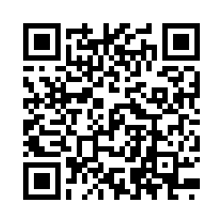

Academic self-regulation (ASR) is defined as your own thoughts, feelings, and actions that are focused on attaining goals you have set for yourself. Students who are self-regulated learners tend to be proactive in their efforts to learn, primarily because they are aware of their strengths and limitations and because they are guided by personally set goals and task-related strategies.
The ASR scale that you can reach by scanning the QR code gives you a sense of awareness about your individual self- regulation and accountability for your own learning. As you can see from the results provided in your email, there are seven elements that the author believes make up Academic Self-Regulation.
Magno (2010) asked 309 participants to complete the ASR scale. The minimum score is 1, and the maximum score is 4. If you score 1 to 1.5 on any of the components of the ASR, this will indicate that your own thoughts, feelings, and actions are lower than average on that part of the scale.
If you score highly on any of the ASR subscales, then this indicates you believe that you have positive strategies in place to support your own learning in those aspects of self-regulation. We expect that most students will score close to the averages shown in the table below.
Remember that academic self-regulation is something that you can develop over time with some of the strategies we suggest below.
Table 1. Average scores of 309 participants on the Academic Self-Regulation Scale from Magno (2010)| Subscales | Mean Score |
|---|---|
| Memory Strategies | 2.53 |
| Goal Setting | 2.74 |
| Self-Evaluation | 2.84 |
| Seeking Help | 3.12 |
| Environmental Regulation | 2.82 |
| Learning Responsibility | 2.96 |
| Organising | 3.26 |
In a society with a million and one distractions competing for your attention and focus, it can be a challenge to regulate your own behaviour to focus on your learning goals. In order to get the best outcomes, you will likely need to work on your own self-regulation in relation to your learning.
Self-regulation is not a cognitive ability, or an academic performance skill. It is the self-directed process by which you transform your cognitive abilities into academic skills. Self-regulation is also a valuable process in employability. Employers favour individuals who are high in self-regulation, and those individuals tend to progress well in their desired field.
Based upon this you will be able to see how it is worth investing time in nurturing your own academic self-regulation. Below are some ideas about how you can work to develop and refine your self- regulation skills.
Before you put pen to paper or fingers to keyboard consider the task that you must complete, set achievable bite-sized goals, and plan strategically how you will achieve these goals.
Are you clear about what is expected of you?
When engaging with the task can you visualise what you want to achieve? Now you must apply self- control and attentional focus to the task
What kind of memory strategies will be most useful to you in your learning? Some people like visual strategies such as mind maps, some like to use text-based bullet journals, and others find that colour coding often helps organise thoughts. There are so many strategies you can use to support your learning, find something that works for you
Once the task is complete you should always take some time to reflect. This is not the time to be judging your performance on a task, but to identify any aspects of good practice and any areas that were problematic, and why.
Remember this is not about being overly critical, but about recognising where improvements can be made
How do you think that you can apply this to your studies?
Improving academic self-regulation takes time and patience. Be patient with yourself, and celebrate every small (or large!) success along the way.
Magno, C. (2010). Assessing academic self-regulated learning among Filipino college students: The factor structure and item fit. The International Journal of Educational and psychological assessment, 5, 61